Lycodon
The genus Lycodon (family Colubridae) has 73 species in SnakeList (none venomous), recorded in 28 countries.
- 73species
- 73non-venomous
- 28countries
About the genus
A genus of the family Colubridae (colubrids).
What the name means: Lycodon – from the Greek lykos (wolf) and odon (tooth) - for the long, fang-like front teeth.[1]
Species
Showing 73 species
- No photo yetAceh Wolf SnakeLycodon sidiki
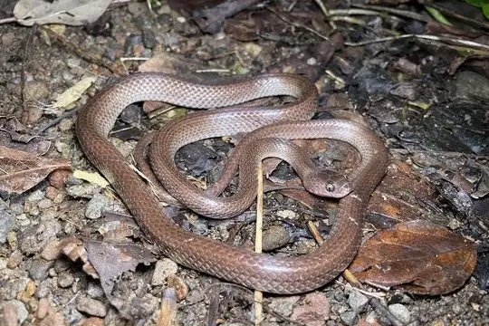
Alcala's Wolf SnakeLycodon alcalai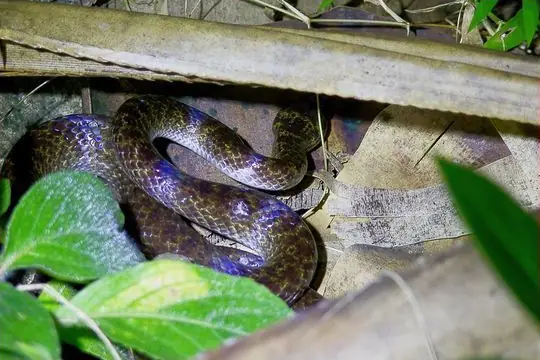
Andaman wolf snakeLycodon hypsirhinoides- No photo yetAndaman Wolf SnakeLycodon tiwarii
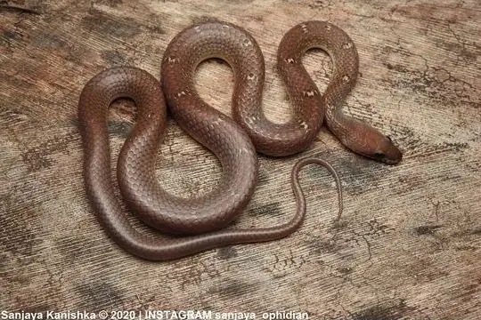
Banded Racer (fasciolatus)Lycodon fasciolatus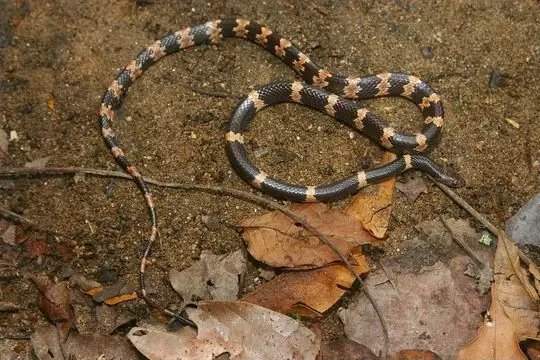
Banded Wolf SnakeLycodon fasciatus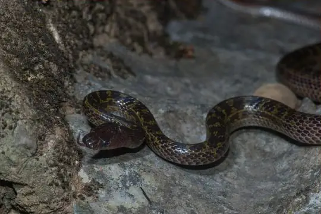
Banks' Wolf SnakeLycodon banksi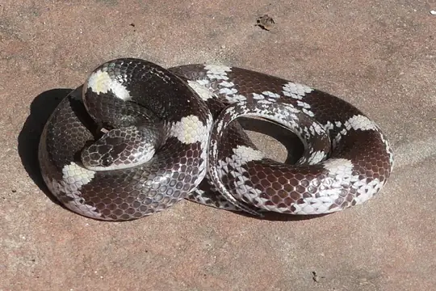
Barred Wolf SnakeLycodon striatus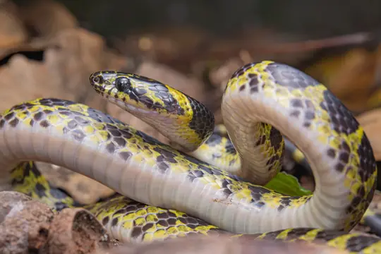
Big-tooth SnakeLycodon flavozonatus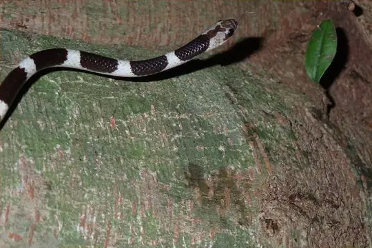
Blanford's Bridal SnakeLycodon davisonii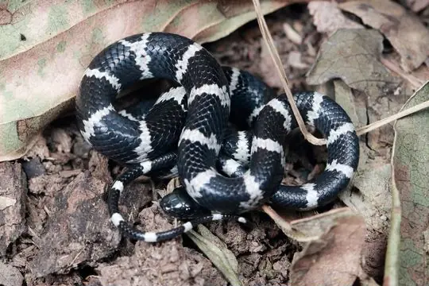
Boehme's Wolf SnakeLycodon synaptor Brown Wolf SnakeLycodon effraenis
Brown Wolf SnakeLycodon effraenis Butler's Wolf SnakeLycodon butleri
Butler's Wolf SnakeLycodon butleri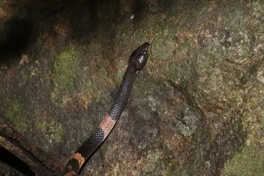
Cardamom Mountains Wolf SnakeLycodon cardamomensis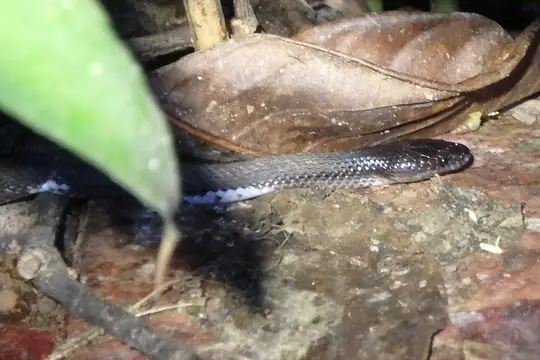
Ceylon Wolf SnakeLycodon carinatus- No photo yetColombo Wolf SnakeLycodon anamallensis
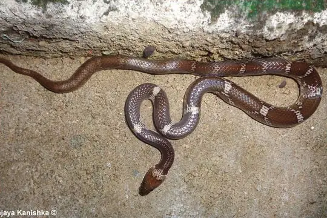
Common Wolf Snake (aulicus)Lycodon aulicus Common Wolf Snake (capucinus)Lycodon capucinus
Common Wolf Snake (capucinus)Lycodon capucinus- No photo yetCommon Wolf Snake (solivagus)Lycodon solivagus
- No photo yetDavid's Wolf SnakeLycodon davidi
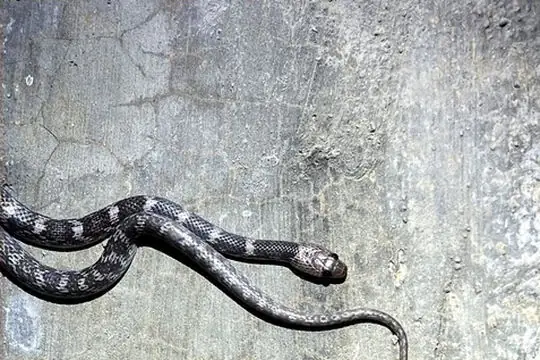
Deccan Wolf SnakeLycodon deccanensis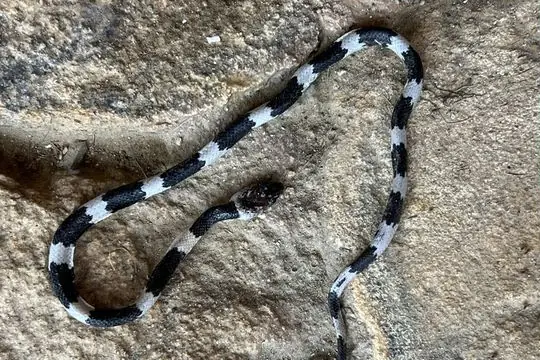
Duméril's Wolf SnakeLycodon dumerilii Dusky Wolf SnakeLycodon albofuscus
Dusky Wolf SnakeLycodon albofuscus- No photo yetFaust's Wolf SnakeLycodon fausti
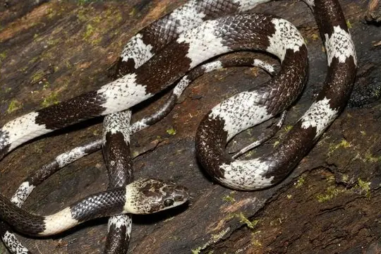
Ferron's Wolf SnakeLycodon ferroni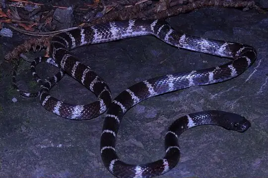
Formosa Wolf SnakeLycodon ruhstrati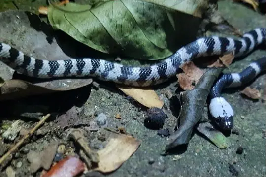
Futsing Wolf SnakeLycodon futsingensis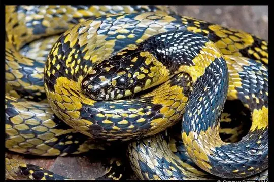
Gammie's Wolf SnakeLycodon gammiei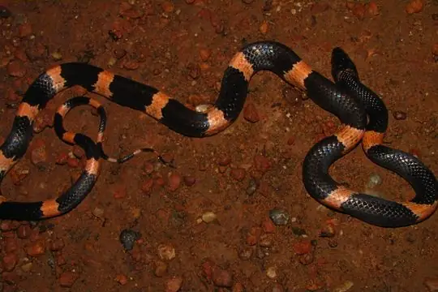
Gibson's wolf snakeLycodon gibsonae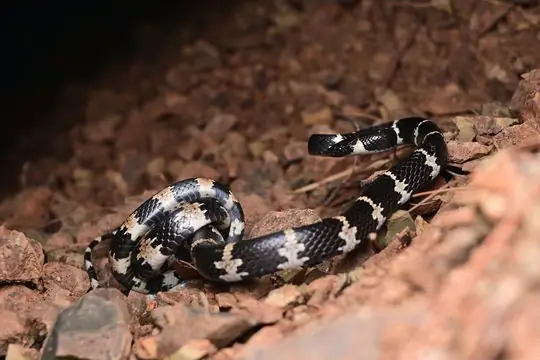
Gongshan Wolf SnakeLycodon gongshan Gua Wang Burma Wolf SnakeLycodon cavernicolus
Gua Wang Burma Wolf SnakeLycodon cavernicolus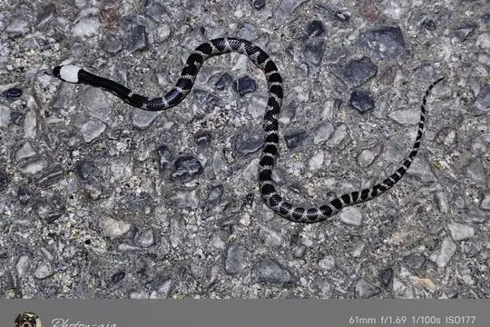
Huaping Wolf SnakeLycodon cathaya- No photo yetKundu's Wolf SnakeLycodon kundui
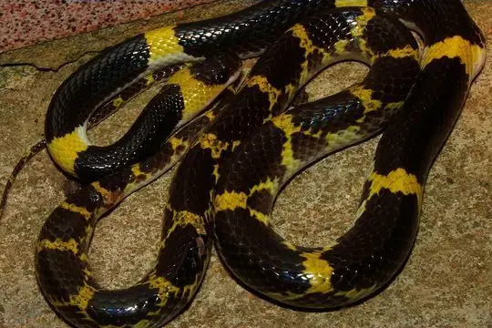
Laotian Wolf SnakeLycodon laoensis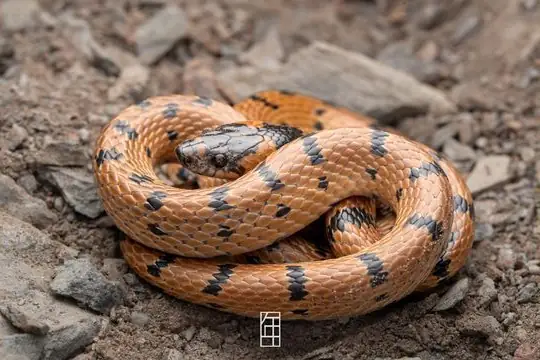
Luding Wolf SnakeLycodon multizonatus- No photo yetMackinnon's Wolf SnakeLycodon mackinnoni
 Malayan Banded Wolf SnakeLycodon subcinctus
Malayan Banded Wolf SnakeLycodon subcinctus Malayan Bridal SnakeLycodon subannulatus
Malayan Bridal SnakeLycodon subannulatus- No photo yetManila Wolf SnakeLycodon tessellatus
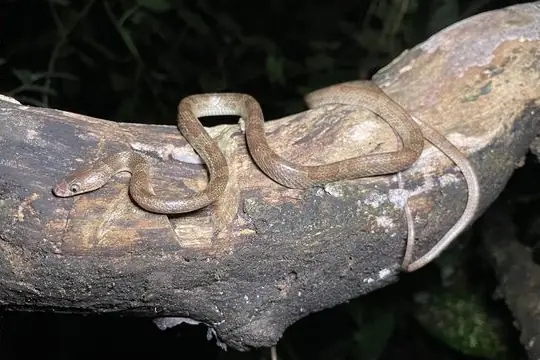
Muller's Wolf SnakeLycodon muelleri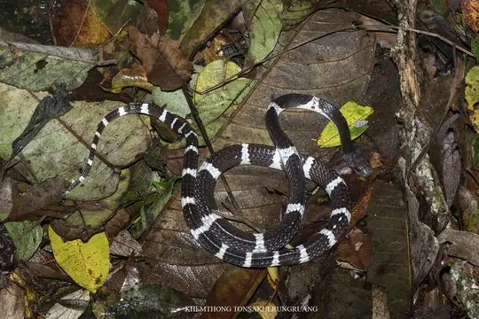
Namdong Wolf SnakeLycodon chapaensis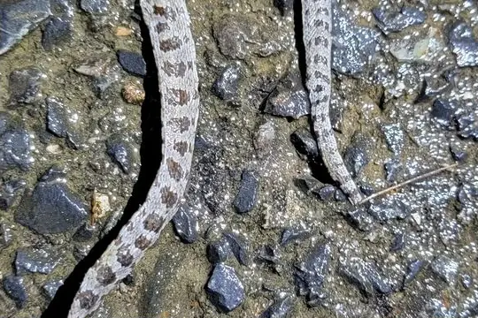
Oriental Odd-tooth SnakeLycodon orientalis- No photo yetOta's Wolf SnakeLycodon bibonius
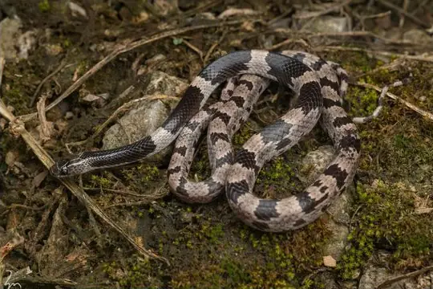
Painted Wolf SnakeLycodon pictus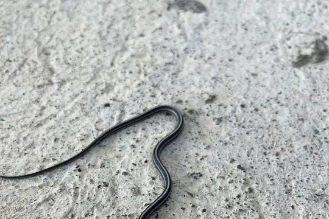
Philippine DryocalamusLycodon philippinus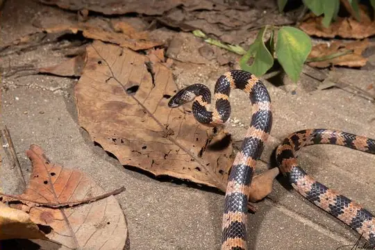
Recluse Wolf SnakeLycodon obvelatus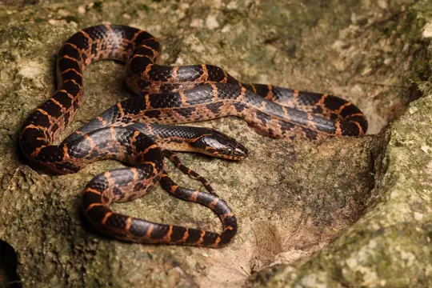
Red-banded SnakeLycodon rufozonatus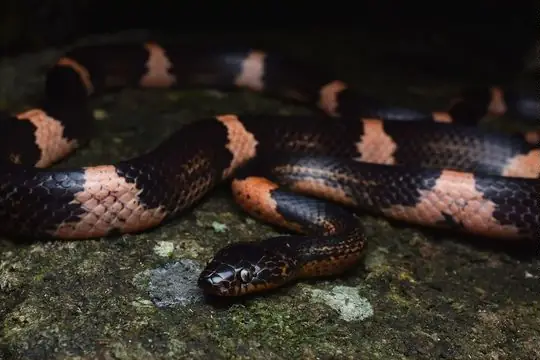
Rendahl's Wolf SnakeLycodon paucifasciatus- No photo yetRhade Wolf SnakeLycodon anakradaya
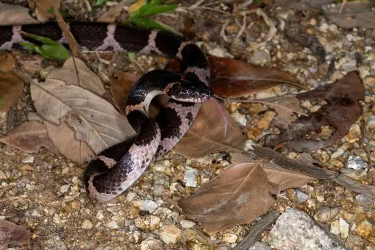
Rose Big-tooth SnakeLycodon rosozonatus- No photo yetRoss' Wolf SnakeLycodon chrysoprateros
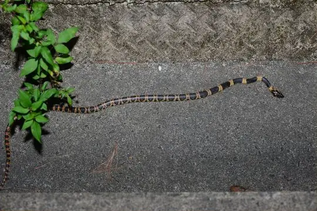
Ryukyu Odd-tooth snakeLycodon semicarinatus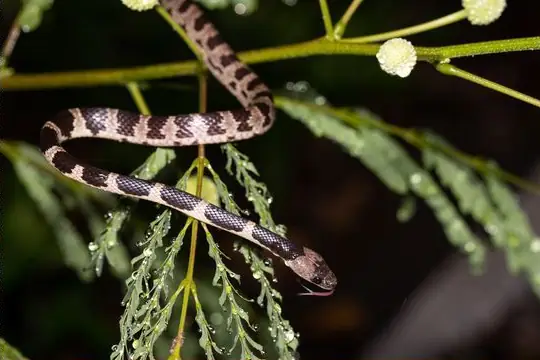
Ryukyu Wolf SnakeLycodon multifasciatus- No photo yetScarce Bridal SnakeLycodon gracilis
 Seale’s Banded Asian Wolf SnakeLycodon sealei
Seale’s Banded Asian Wolf SnakeLycodon sealei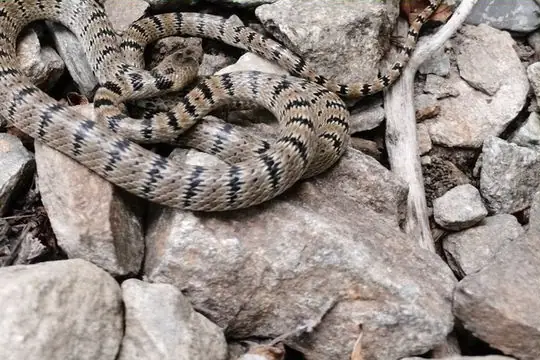
Serrate-banded Wolf SnakeLycodon serratus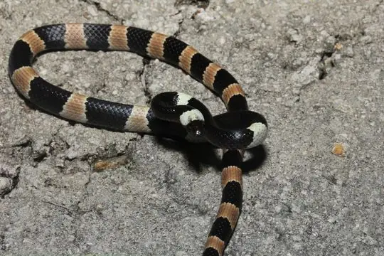
Sichuan Wolf SnakeLycodon liuchengchaoi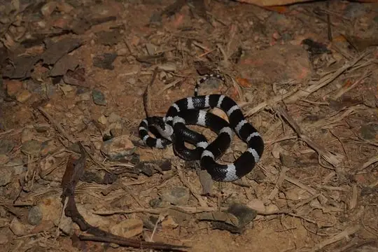
Snake-Eater Wolf SnakeLycodon ophiophagus- No photo yetSouthern Red-banded SnakeLycodon meridionale
- No photo yetSri Lankan Bridle SnakeLycodon chithrasekarai
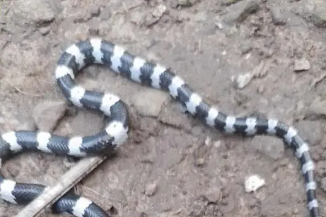
Sulawesi Wolf SnakeLycodon stormi Three-Banded Bridled SnakeLycodon tristrigatus
Three-Banded Bridled SnakeLycodon tristrigatus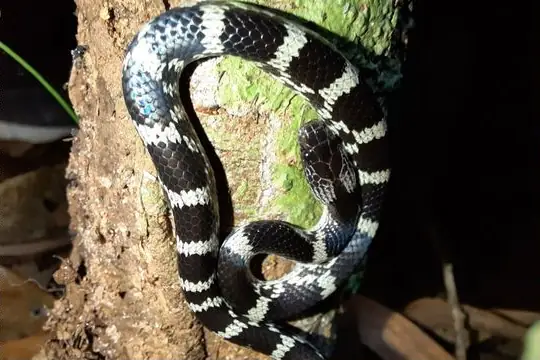
Travancore Wolf SnakeLycodon travancoricus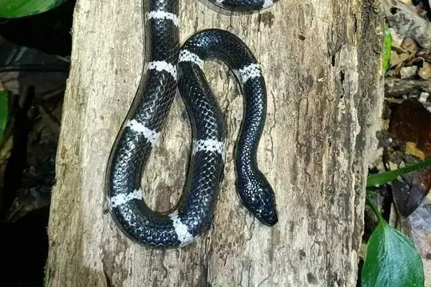
Truong’s wolf snakeLycodon truongi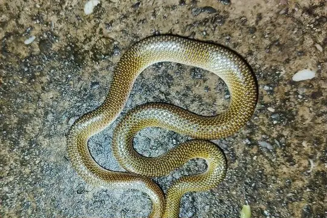
Twin-spotted Wolf SnakeLycodon jara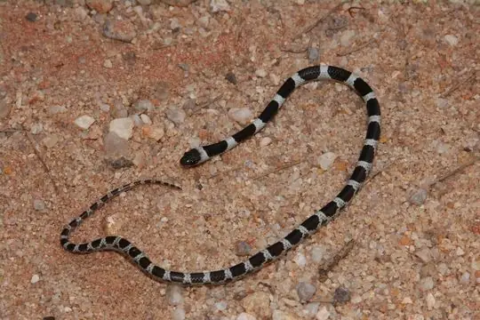
Vellore Bridal SnakeLycodon nympha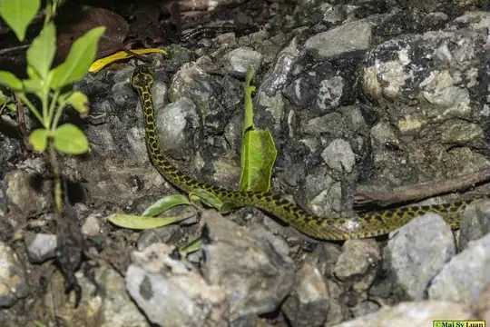
Vietnamese Large-toothed SnakeLycodon meridionalis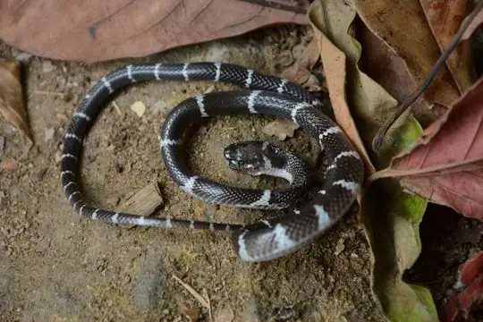
White-banded Wolf SnakeLycodon septentrionalis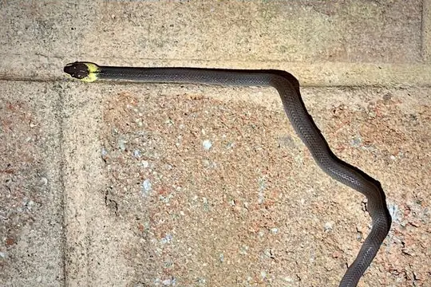
Yellow-collared Wolf SnakeLycodon flavicollis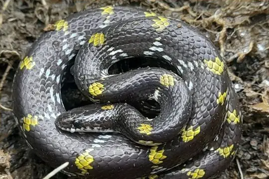
Yellow-spotted Wolf SnakeLycodon flavomaculatus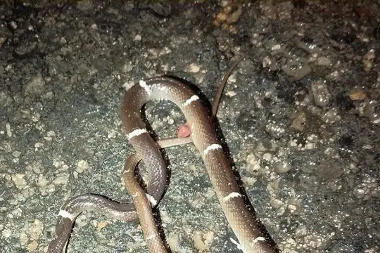
Zaw's Wolf SnakeLycodon zawi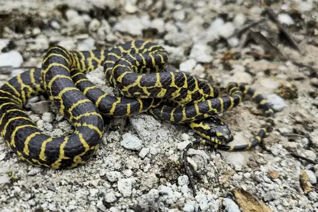
Zayu Wolf SnakeLycodon zayuensis- No photo yetZoos Victoria's Wolf SnakeLycodon zoosvictoriae
No snakes in Lycodon match.
About the genus Lycodon
- Family: Colubridae.
- Recorded in: Afghanistan, Australia, Bangladesh, Bhutan, Brunei, Cambodia, China, India, Indonesia, Iran, Japan, Laos, Malaysia, Maldives, Myanmar, Nepal, Pakistan, Philippines, Russia, Singapore, Sri Lanka, Taiwan, Tajikistan, Thailand, Timor-Leste, Turkmenistan, Uzbekistan, Vietnam.